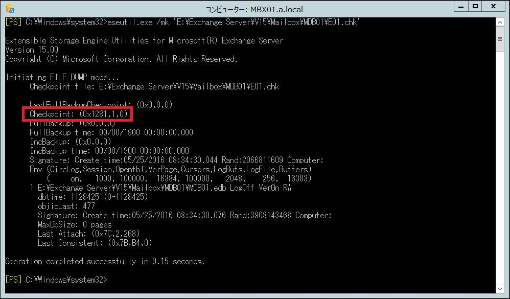

Exchange Server ではデータベースへの変更が行われる際に、まず初めにトランザクション ログにその変更内容が記録され、その後、その内容がデータベースへ書き込まれます。このため、例えばあるタイミングで採取したバックアップ ファイルと、それ以降のトランザクション ログがあれば、トランザクション ログをバックアップしたデータベース ファイルに反映させることで、最新の状態にすることが可能です。
トランザクション ログはデータベースの更新があるたびに記録されるため、一般的に多くのログが出力されます。
日々 Exchange Server をご利用いただく中で、トランザクション ログによるディスクの空き容量が圧迫されることを防止するため、一般的には以下のいずれかを実行し、古いトランザクション ログを削除いただいているかと存じます。
- バックアップを採取する。
- データベースの循環ログを有効にする。
トランザクション ログの詳しい説明や上記を実施することでどのようにトランザクション ログが削除されるのかについての説明は割愛させていただきますが、何らかの要因でトランザクション ログの削除がされなくなり、気が付いた時にはディスクの空き領域が圧迫され、データベースがマウントできなくなった、というお問合せを多くいただきます。
今回のブログでは、データベースへ反映済みのトランザクション ログを確認し、別のディスクへ移動や削除しても問題ないトランザクション ログを判断する方法についてご案内いたします。
データベースへ反映済みのトランザクション ログの確認方法
トランザクション ログと同じフォルダにあるチェックポイント ファイル (.chk ファイル) を確認することで、データベースへ反映されているトランザクション ログを確認することが可能です。以下の手順は、Exchange 2007, Exchange 2010, Exchange 2013, Exchange 2016 といずれのバージョンでも同様となります。
確認手順
Exchange サーバーで Exchange 管理シェルを起動します。
次のコマンドを実行し、チェックポイント ファイルの情報を表示します。
1
Eseutil /mk "chk ファイル名の絶対パス"
実行例:
1
Eseutil /mk "E:\Exchange Server\V15\Mailbox\MDB01\E01.chk"
※ チェックポイント ファイルは、トランザクション ログが格納されているフォルダにあります。
上記のコマンドを実行すると、以下のような出力が返されますので、”Checkpoint” の内容を確認します。
表示例 (Exchange 2013 の場合)

上述の例では、Checkpoint: (0x1281, 1, 0) となっており、トランザクション ログ番号の 0x1280 までデータベースに反映済みであることを示しています。トランザクション ログ ファイル名は、Exchange 2007 以降ではプレフィックス+ <8桁のログ番号> となります。上記の例ではプレフィックスが E01 であるため、E0100001280.log までがコミット済みであり、E0100001280.log までのログを別のディスクへ移動や削除をすることができます。
※ ログ番号とファイル名は 16 進数となっているため、ファイル名でソートするとログの順番どおりには並びません。ソートする場合は更新日時にてソートください。
なお、Exchange 2010 以降の DAG を構成されている場合、データベース コピーを持っている各サーバーで手動でトランザクション ログの退避・削除をする必要がありますのでご注意ください。Active なデータベースを保持しているサーバーで対処を実施しても、Passive データベースを保持しているサーバー上でトランザクション ログが自動的に削除されることはありません。また、トランザクション ログの削除や移動を実施した場合、データベースのコピー状態で不整合が起きる可能性がございます。この場合は、容量圧迫の問題解決後、データベース コピーの再シードを実施くださいますようお願いいたします。
※本情報の内容（添付文書、リンク先などを含む）は、作成日時点でのものであり、予告なく変更される場合があります。